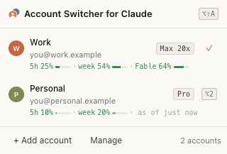

Account Switcher for Claude
Account Switcher for Claude
Every Claude account, one click away.
A small Chrome extension that keeps all your claude.ai accounts signed in, switches between them instantly, and opens “not found” links in the account they belong to.
Unofficial — not affiliated with Anthropic.

Install in three steps
- Download and unzip
claude-account-switcher.zip. - Open
chrome://extensionsand turn on Developer mode. - Click Load unpacked, pick the unzipped folder, pin it, then press Alt+Shift+A (⌥⇧A on Mac).
Privacy
Your cookies stay in your browser. The extension only talks to claude.ai — no server, no analytics, no tracking. Saved sessions are stored unencrypted inside your Chrome profile.